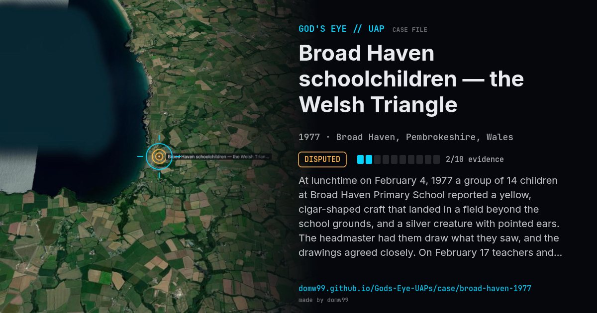

Broad Haven schoolchildren — the Welsh Triangle

At lunchtime on February 4, 1977 a group of 14 children at Broad Haven Primary School reported a yellow, cigar-shaped craft that landed in a field beyond the school grounds, and a silver creature with pointed ears. The headmaster had them draw what they saw, and the drawings agreed closely. On February 17 teachers and others said they saw the same craft, and on April 19 the owner of the Haven Fort Hotel in nearby Little Haven reported an “upside-down saucer” and two figures in a field. The wave of sightings in the area became known as the Dyfed or Welsh Triangle. A Ministry of Defence investigator found nothing to show a landing. The events were revisited in a 2023 Netflix documentary and a 2024 BBC series.
Explanation
A Ministry of Defence investigator found no physical evidence that anything had landed and suggested that “a local prankster” might have been responsible. The children’s drawings agreed closely, which is why the case is still told.
What was seen
Shape: Yellow cigar-shaped craft; later an “upside-down saucer”
Witnesses: 14 schoolchildren, then teachers and a hotel owner
Duration: Lunchtime on Feb 4; further reports to April